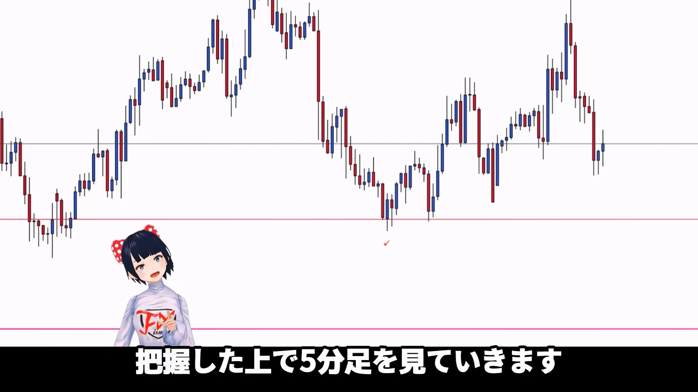

👈👈ギガ速FX_index
👈👈ギガ速FX_index- ページ内のINDEX_test
★★★TEST TEXT★★★★（★TEST）m3006_＋02


월간, 주간, 일간 차트를 사용하여 현재 트레이딩 위치를 파악합니다.
월간 차트는 주로 월초, 중간, 월말에 확인하며, 주간 차트와 일간 차트에서 주요 지지선과 저항선을 그립니다.
상위 시간대 차트에서 레인지 박스를 그리고, 해당 박스 내에서 가격 움직임을 분석합니다.
레인지 브레이크가 발생할 때의 신호와 패턴을 파악하여 트레이딩 전략을 세웁니다.
중요한 지지선이나 저항선을 기준으로 손절매와 이익 실현 전략을 설정합니다.
상위 시간대에서 중요한 지지선이나 저항선을 기준으로 하여 작은 시간대에서의 트레이딩 전략을 조정합니다.
1분 차트, 5분 차트, 1시간 차트를 조합하여 상위 시간대에서 발생한 주요 패턴을 하위 시간대 차트에서 확인하고, 트레이딩 시점을 결정합니다.
20sma와 같은 이동평균선을 활용하여 레인지 브레이크 여부를 판단합니다.
실제 트레이딩 사례를 통해 상위 시간대 차트를 활용한 레인지 분석과 브레이크 전략을 구체적으로 설명합니다.
주요 지지선과 저항선을 기준으로 트레이딩 전략을 세우고, 상황에 따라 유연하게 대처할 것을 권장합니다.
이 영상은 상위 시간대 차트를 활용한 레인지 분석과 레인지 브레이크 전략을 세우는 데 유용한 조언과 실질적인 예시를 제공합니다.